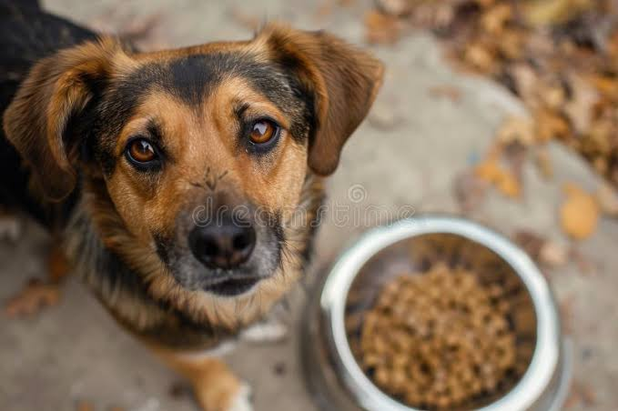
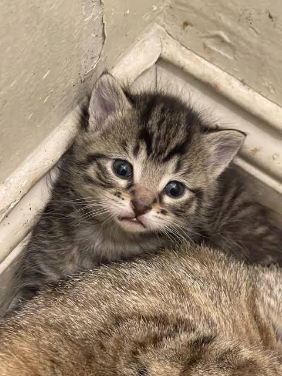
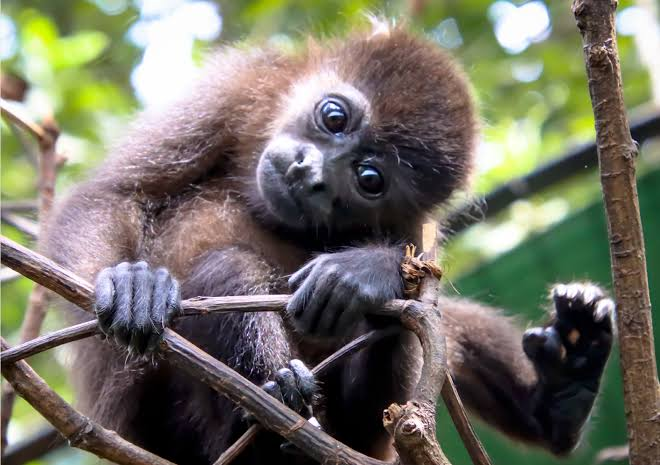
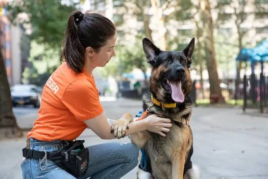

Casos activos
18
Bienvenido al panel del refugio
PatitasSeguras reúne en un solo lugar el reporte, el seguimiento y la adopción de perros, gatos y fauna silvestre rescatados. Desde aquí puedes registrar un nuevo caso o revisar cómo avanza cada rescate.
Resumen del refugio
Cifras de referencia para el prototipo. Más adelante se calcularán a partir de los casos registrados.
18
7
5
42
31
Últimos ingresos

Perros
Encontrada en la vía a Crucita con una herida leve en una pata. Recibe curaciones diarias.
En Tratamiento

Gatos
Rescatado de una alcantarilla en el centro de la ciudad. Está en observación y con buen apetito.
Rescatado

Fauna silvestre
Hallado deshidratado cerca de un camino rural. Un veterinario evalúa su recuperación.
En Tratamiento
Cómo funciona
Sobre el refugio
El refugio funciona gracias a voluntarios, veterinarios y familias que ofrecen un hogar temporal. Todos los casos quedan registrados para que cada cambio de estado tenga fecha y responsable.
Este prototipo representa la estructura base del sistema, construida con HTML5 semántico y pensada para crecer en las siguientes unidades.
